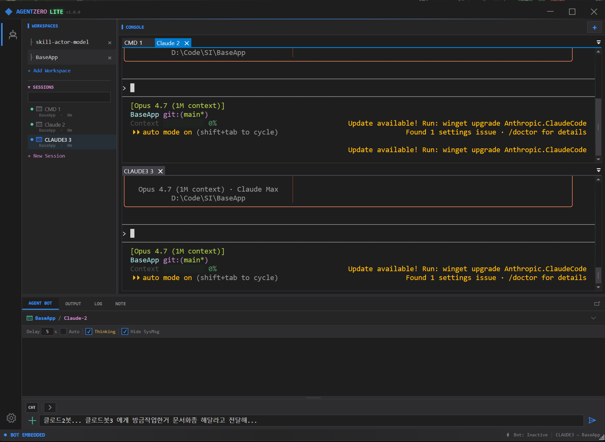

AI 시대를 위한 미니멀 멀티-CLI IDE
A minimalist multi-CLI IDE for the AI era
여러 AI CLI를 한 창에 나란히 띄우고, 명령을 쏘고, 모델끼리 대화시키세요.
Run many AI CLIs side by side, pipe instructions to any of them, and let different models talk to each other.

픽셀아트로 재구성한 실제 셸 — 4가지 모드를 자동 재생하며 실제 동작을 그대로 보여줍니다.
Pixel-art reconstruction of the real shell — auto-plays four modes that mirror the actual UI flow.
같은 워크스페이스에서든 다른 워크스페이스에서든, CLI로 돌아가는 AI(Claude, Codex, 종류 무관)에게 명령 한 줄을 바로 꽂아 넣을 수 있습니다. 서로 다른 모델의 AI들을 동시에 띄워두고, 같은 경로로 둘을 대화시킬 수도 있습니다 — 별도 중계 서버나 커스텀 브로커 없이, 모델 간 크로스 대화.
Pipe a single instruction to an AI CLI (Claude, Codex, any model you can run in a shell) living in the same workspace — or in a different one — and have it act. Run two different AI models side by side and let them talk to each other through the same mechanism: cross-model dialogue, no custom broker required.
각 탭이 Windows Terminal과 동일한 conhost 렌더러로 돌아갑니다. 흉내가 아닌 진짜 PTY.
Every tab is a real conhost session — the same renderer Windows Terminal uses. Not a pseudo-PTY pretending.
프로젝트마다 탭 세트를 따로 유지합니다. 좌측 사이드바에서 한 번 클릭하면 해당 폴더에서 새 Claude가 바로 시작됩니다.
Each project keeps its own set of tabs. One click in the sidebar = a fresh shell in that directory, ready to launch Claude.
Claude가 탭 0에서 탭 1의 Codex에게 말을 걸고, Codex가 답하고, 사람은 중간에서 감독만 합니다. 클라우드 중계 없음.
Claude in tab 0 talks to Codex in tab 1, Codex replies, you supervise from the middle. No cloud relay.
한 탭은 손가락으로, 다른 탭은 음성으로 동시 진행. Whisper.net 오프라인 STT + Vulkan GPU(AMD/Intel/NVIDIA 공통)로 받아쓴 텍스트가 활성 터미널 AI에 직접 흘러갑니다. 음성 출력(TTS)은 개발 중.
Type into one tab, speak to the other in parallel. Whisper.net offline STT + Vulkan GPU (cross-vendor: AMD/Intel/NVIDIA) feeds the transcribed text straight into the active terminal AI. TTS reply is in development.
도킹 가능한 채팅 패널. 입력한 텍스트를 활성 터미널로 보냅니다. KEY 모드는 Ctrl+C·화살표 같은 제어키도 전송.
A dockable chat pane that forwards text into the active terminal. KEY mode ships raw control keys (Ctrl+C, arrows, Tab) too.
Claude의 /skills 목록을 자동 파싱해 채팅창의 / 팝업 메뉴로 노출합니다. LLM 호출 없이 매크로로 발사.
Parses Claude's /skills output and exposes it as a / popup menu. Fires as a macro — no LLM round-trip.
워크스페이스 폴더의 .md / Pencil 파일을 바로 렌더링합니다. 다이어그램까지.
Renders .md / Pencil files straight from the workspace folder — including Mermaid diagrams.
AgentZeroLite.exe -cli terminal-send 0 0 "npm test" 한 줄로 원격 제어 가능. WM_COPYDATA + 메모리 맵 기반 IPC.
AgentZeroLite.exe -cli terminal-send 0 0 "npm test" from any script. IPC over WM_COPYDATA + memory-mapped files.
터미널/워크스페이스/봇이 Akka.NET 액터로 감독됩니다. 한 세션이 죽어도 창 전체는 멀쩡.
Terminals, workspaces and the bot live under Akka.NET supervision. One crashing session never takes the window down.
이전 README 의 "1분 레시피"(각 AI 탭에 도구 사용법을 사람이 직접 붙여넣기)는 이제 필요 없습니다. AgentBot 이 첫 접촉 시 핸드셰이크 헤더를 자동으로 prepend 하고, 피어 AI 는 그 헤더만 읽고 bot-chat 프로토콜을 인지해 회신합니다 — 사용자 사전 학습 0회.
The old README "1-minute recipe" (paste a teaching message into each AI tab) is gone. AgentBot now auto-prepends a handshake header on first contact, and the peer AI reads that header and acks via bot-chat on its own — zero user prep.
"클로드군 코덱스양과 자율토론 5턴이내에 해" · LocalLLM 이 Mode 2 트리거를 인식해 send_to_terminal 자동 발사.
"Claude한테 X해", "토론 시작해", "물어봐줘" — Gemma 4 recognises Mode 2 phrases and emits send_to_terminal with a GBNF-constrained tool call.
WorkspaceTerminalToolHost.BuildFirstContactHeader 가 "You are Claude and I am AgentBot..." 헤더를 자동 prepend. bot-chat help + --from 사용법까지 동봉.
WorkspaceTerminalToolHost.BuildFirstContactHeader auto-prepends an "You are Claude and I am AgentBot..." header that documents the bot-chat + --from reverse channel inline. The peer reads, runs -cli help, then acks.
피어가 bot-chat "DONE(...)" --from Claude 실행 → WM_COPYDATA → HandleBotChat → Reactor 가 새 사이클로 wake. 폴링 안 함.
Peer runs bot-chat "DONE(...)" --from Claude → WM_COPYDATA → HandleBotChat → Reactor wakes for a continuation cycle. No read_terminal polling required.
상단: Claude / Codex 좌우 2분할 · 하단: AgentBot AIMODE — 핸드셰이크 자동 첨부 + 피어 콜백을 그대로 재현.
Top: Claude / Codex split · Bottom: AgentBot AIMODE — faithful recreation of auto-handshake injection + peer callback.
음성 입력은 AgentBot 에 직결돼 있습니다. 마이크에 말하면 오디오가 로컬에서 받아쓰여지고(Whisper.net 오프라인 GGML, 클라우드 안 거침), 그 텍스트는 채팅창에 직접 타이핑한 것과 동일한 경로로 활성 AI CLI 탭에 흘러 들어갑니다.
Voice input is wired straight into AgentBot. Speak into the mic, the audio is transcribed locally (Whisper.net offline GGML, no cloud), and the resulting text takes the same path as if you had typed it into the chat box — straight to whichever AI CLI tab is active.
왜 의미 있나 — 듀얼 멀티태스크 플레이. 한 터미널이 키보드로 점령돼 있을 때(코드 작성, Claude diff 검토), 두 번째 터미널은 손을 대지 않고 음성으로 구동할 수 있습니다. AI 대화 두 개가 동시에 돌고 사람 한 명이 둘 다 감독 — AIMODE 의 모델 간 티키타카가 이젠 본인 두 입력 채널(손/입) 간 티키타카로 확장됩니다.
Why it matters — the dual-multitask play. While one terminal is taking your keyboard (writing code, code-reviewing Claude's diff), you can drive a second terminal with your voice without lifting your hands. Two parallel AI conversations supervised by one human — AIMODE's tiki-taka between models extends here into tiki-taka between your own two input channels (hands / voice).
상단: Claude 터미널 · 하단: AgentBot CHT 모드 + 음성 툴바 — 실제 마이크/VAD/Whisper/자동전송 흐름을 그대로 재현.
Top: Claude terminal · Bottom: AgentBot CHT mode + voice toolbar — faithful recreation of mic / VAD / Whisper / auto-send flow.
GGML small(~466 MB) / medium(~1.5 GB) 모델이 첫 사용 시 자동 다운로드. %USERPROFILE%\.ollama\models\agentzero\whisper\ 캐시. 클라우드 안 거침.
GGML small (~466 MB) / medium (~1.5 GB) models, downloaded on first use to %USERPROFILE%\.ollama\models\agentzero\whisper\. Nothing leaves the machine.
CPU + Vulkan 동시 번들 (~63 MB 추가). AMD · Intel · NVIDIA 가 같은 바이너리로 가속. CUDA 미포함 (cuBLAS ~750 MB 비대화 회피).
CPU + Vulkan runtimes bundled (~63 MB extra). AMD · Intel · NVIDIA all accelerate the same binary. CUDA stays out (its ~750 MB cuBLAS payload is disproportionate).
설정탭의 GPU 디바이스 콤보 — Auto 가 벤더 + VRAM 휴리스틱으로 베스트 어댑터 선정 (NVIDIA dGPU > AMD dGPU > Intel Arc > iGPU). 노트북 dGPU+iGPU 환경도 자동 처리, 잘못 잡혔을 땐 한 클릭 오버라이드.
Voice settings expose a GPU device combo — Auto picks the best adapter via vendor + VRAM heuristic (NVIDIA dGPU > AMD dGPU > Intel Arc > iGPU). Handles laptop dGPU + iGPU correctly; one-click manual override if it picks wrong.
Off / Windows SAPI / OpenAI tts-1 설정 자체는 들어와 있지만, 터미널 AI 출력을 받아 스피커로 뱉어주는 응답 스트리밍 파이프라인은 아직 미완. 지금은 음성 입력 전용.
Off / Windows SAPI / OpenAI tts-1 settings are wired up, but the response-streaming pipeline that pipes terminal AI output into the speaker is still under development. Today voice is input-only.
AgentBot 옆 지구본 아이콘을 누르면 풀스크린 WebDev 작업공간이 열립니다. v0.4 부터는 좁은 Settings 탭이 아니라, 좌측 샘플 리스트 + 우측 풀폭 WebView2 캔버스. 핵심: C# 안 건드리고 작은 AI 도구를 만들 수 있다는 것. AgentZero 의 네이티브 능력(LLM · TTS / STT · 음성노트 · 요약)을 window.zero.* JS 브리지로 노출하고, 웹 도구는 그걸 호출하는 평범한 HTML/JS 폴더로 배포됩니다.
Click the globe icon next to AgentBot — full-window WebDev workspace opens. Promoted from a cramped Settings tab in v0.4 to a sample list on the left + full-width WebView2 canvas on the right. The point: build small AI tools without touching C#. AgentZero exposes its native capabilities (LLM, TTS / STT, voice-note pipeline, summary) as a window.zero.* JS bridge; web tools call those through it and ship as plain HTML / JS folders.
window.zero.* 표면window.zero.* surfacechat.send/stream, voice.speak/providers, VAD-게이트 note.start/pause/resume/setSensitivity, RMS 미터를 위한 onAmplitude/onSpeaking, 길이 분할 재귀 summarize. 모든 호출은 Promise. STA 위반 없이 백그라운드 이벤트도 UI 디스패처 통과.
chat.send/stream, voice.speak/providers, VAD-gated note.start/pause/resume/setSensitivity, onAmplitude/onSpeaking for RMS meters, length-chunked recursive summarize. All Promise-based. Background events marshal through the UI dispatcher — no STA violations.
WebDev → + Install Plugin → From .zip…. 단일 top-folder 자동 언래핑. 엄격한 manifest 검증. 실패는 staging-dir 만 정리, 부분 쓰기 X.
WebDev → + Install Plugin → From .zip…. Auto-unwraps a single top-level folder. Strict manifest validation. Failure cleans the staging dir — never partial-writes.
github.com/owner/repo/tree/main/path/to/plugin 같은 폴더 URL 붙여넣기. raw 로 manifest fetch → Trees API 로 폴더 enum → 파일 다운로드. 로컬 git CLI 의존 없음.
Paste a folder URL like github.com/owner/repo/tree/main/path/to/plugin. Raw-fetch the manifest, walk the Trees API for the folder, download every file. No local git CLI required.
샘플 리스트의 플러그인 행 우측에 × 버튼. 클릭 → 확인 → 마운트 폴더 삭제 + 메뉴 자동 갱신. 빌트인은 보호.
Each plugin row carries a × button on the right. Click → confirm → mounted folder removed + menu refreshes. Built-ins are protected.
Project/Plugins/voice-note 에 본체. 4 파일 (manifest + html + css + js) 만 있으면 STT 음성 저널이 동작합니다. 컴파일에 포함되지 않는 외부 폴더 — 플러그인 코드가 릴리스 빌드를 망가뜨릴 수 없는 구조. 자기 설치 가능: GitHub URL 그대로 WebDev 에 붙여넣으면 같은 레포가 자기 자신을 설치합니다.
Body lives at Project/Plugins/voice-note. Four files (manifest + html + css + js) and the STT voice journal works. Outside the build — plugin code can't break a release. Self-installable: paste the GitHub folder URL into WebDev and the same repo installs itself back.
전체 녹음 X. 발화 단위로만 Whisper 호출, 단어 사이의 침묵은 자동 폐기. 라이브 VU 미터 + threshold 마커 — 자기 음성이 임계값 위인지 한눈에. Settings/Voice 의 STT 언어/디바이스/뮤트 자동 상속.
No full recording. Whisper fires per utterance only; gaps are dropped. Live VU meter + threshold marker — see at a glance whether your voice clears the bar. Inherits STT language / device / mute switch from Settings/Voice automatically.
Max-token 초과를 두려워 말 것. 6000자 이상이면 sentence boundary 에서 절반 분할 → 재귀 요약 → 합쳐서 한 번 더 통합. chat.send 와 별도 일회성 세션이라 채팅 컨텍스트 오염 X.
Don't fear max-token overflows. Past 6000 chars, split on a sentence boundary → summarize halves recursively → merge + one consolidating pass. Uses a one-shot LLM session so the cached chat session isn't polluted.
raw 타임라인 (시간대별 발화 텍스트) · summary · meta (모델/토큰/요약시각). debounced 400ms 쓰기 — 빠른 제목 타이핑이 디스크 폭주 X. export/import 는 후속.
Raw timeline (timestamped utterances) · summary · meta (model / token / summarized-at). Debounced 400 ms writes — rapid title typing won't thrash disk. Export / import is a future drop.
voice-note 는 이 표면이 충분하다는 존재 증명 — 다음 플러그인(트랜스크립트 export, 멀티노트 검색, …)은 같은 브리지 위에 빌드합니다. 직접 만들어 보고 싶다면 Project/Plugins/README.md 의 manifest 계약 + 양 채널 설치 가이드를 출발점으로.
voice-note is the existence proof that the surface is enough — the next plugins (transcript export, multi-note search, …) build on the same bridge. To roll your own, start from the manifest contract + dual-channel install guide in Project/Plugins/README.md.
ActivityBar 의 새 Scrap 아이콘을 누르면 풀스크린 캡처 도구가 열립니다. 크로스헤어를 드래그해서 아무 보이는 창에 떨어뜨리거나, HWND 를 직접 입력하면 — 그 창의 읽을 수 있는 텍스트를 자동 스크롤하며 잡아옵니다. 코드 에디터의 긴 파일, 브라우저의 무한 스크롤 페이지, 채팅 로그까지. 각 캡처는 logs/scrap/yyyy-MM-dd-HH-mm-ss-scrap.txt 로 저장되며 프리뷰 패널이 라이브로 채워집니다.
Click the new Scrap icon on the ActivityBar — full-window capture tool opens. Drag the crosshair onto any visible window (or type an HWND) and Scrap pulls the readable text out, auto-scrolling through long content: long source files, infinite-scroll web pages, chat logs. Each capture lands as logs/scrap/yyyy-MM-dd-HH-mm-ss-scrap.txt while the preview pane fills live.
툴바의 크로스헤어 위젯을 마우스로 잡아 드래그해서 다른 창 위에 놓으면 root HWND 가 자동 인식됩니다. 직접 0x... 핸들 입력도 가능. 선택 즉시 클래스/타이틀/프로세스/스타일/프레임워크 (Native · Flutter · Electron) 가 WINDOW_INFO 패널에 채워집니다.
Grab the crosshair widget and drag it onto another window — the root HWND auto-detects. Or type a 0x... handle directly. WINDOW_INFO fills instantly with class / title / process / style / framework (Native · Flutter · Electron).
UIA TextPattern → 포커스 영역 UIA 스크롤 → 클립보드 스크롤 (v0.9.1 신규) → ScrollPattern 트리워크 → WM_VSCROLL 폴백 순서로 첫 성공까지 진행. 한 앱에 막혀도 다음 전략이 받아냅니다.
UIA TextPattern → focused-area UIA scroll → clipboard scroll (new in v0.9.1) → ScrollPattern tree-walk → WM_VSCROLL fallback, in priority order. If one app blocks a strategy, the next one picks up.
Swing/AWT (IntelliJ) 처럼 UIA ScrollPattern 을 노출하지 않는 앱도 잡힙니다. Ctrl+Home → 루프 Ctrl+A → Ctrl+C → 클립보드 읽기 → PageDown, 라운드별로 새 텍스트 diff 만 emit. 캡처 끝나면 원본 클립보드 복원.
Even apps that don't expose UIA ScrollPattern (Swing / AWT like IntelliJ) get captured. Ctrl+Home → loop Ctrl+A → Ctrl+C → read clipboard → PageDown, emitting only the new tail per round. Restores the original clipboard on finish.
캡처 진행 중 미리보기 패널이 새 텍스트만 받아 누적 — 화면 깜빡임 없음. 동시에 logs/scrap/*.txt 에 실시간 append. STOP 누르면 즉시 종료 + 부분 결과 보존.
The preview pane receives only the new tail per round — no flicker. Concurrently appends to logs/scrap/*.txt in real time. STOP cancels instantly and preserves the partial result.
Origin (AgentWin) 의 Scrap 모듈을 Lite 의 오버레이 모델에 맞춰 포팅. 2026-04-27 스냅샷 문서가 "REJECT-3 — 경량 정체성 충돌" 로 거절했던 컴포넌트지만, Lite 가 standalone 풀스펙 으로 재정의되면서 (멀티-디바이스/클러스터는 AgentZero PRO 로 분리) M0019 로 정식 채택. 후속 단계로 AgentZeroLite.exe -cli scrap … verb 그룹과 AIMODE 함수콜 (scrap_capture, scrap_read) 이 예정.
Ported from Origin (AgentWin)'s Scrap module, adapted to Lite's overlay-panel model. The 2026-04-27 snapshot doc had marked it "REJECT-3 — conflicts with the lightweight identity"; after Lite was repositioned as standalone full-spec (multi-device / cluster moves to AgentZero PRO), M0019 brought it in. Next up: an AgentZeroLite.exe -cli scrap … verb group and AIMODE function calls (scrap_capture, scrap_read).
CLI가 GUI에 명령을 보낼 땐 Windows의 WM_COPYDATA, 응답은 네임드 메모리 맵 파일에서 폴링합니다. 기본 5초 타임아웃, --no-wait로 fire-and-forget.
Commands travel via WM_COPYDATA, responses come back through named memory-mapped files. Default 5s poll; --no-wait skips it entirely.
브로커 서버도, 클라우드 중계도 없습니다. 두 AI가 서로의 텍스트를 교환해도 모든 것은 같은 Windows 사용자 세션 안에서만.
No broker server, no cloud relay. When two AIs exchange text, everything stays inside one Windows user session.
Akka.NET 액터 트리로 터미널 생명주기·라우팅·장애 격리를 관리합니다. 탭이 죽어도 다른 탭은 살아남습니다.
An Akka.NET actor tree manages lifecycle, routing and fault isolation. A crashing tab never takes the rest down.
AgentZero Lite 자체는 AI 추론을 하지 않습니다. 배관(plumbing)만 제공하고, 지능은 당신이 띄운 AI CLI가 맡습니다.
Lite itself runs no LLM. It's plumbing. The intelligence belongs to whatever AI CLIs you launch.
GUI가 떠 있는 상태에서만 동작합니다. open-win으로 띄우세요.
Requires a running GUI — launch it with open-win.
| Command | 동작 | What it does |
|---|---|---|
| status | GUI 상태 JSON | GUI state JSON |
| open-win · close-win | 메인 창 표시 / 숨김 | Show or hide the main window |
| terminal-list | 전체 워크스페이스/탭 세션 JSON | JSON list of every workspace/tab session |
| terminal-send <g> <t> "text" | 탭 <t>로 텍스트 전송 | Send text to tab <t> in workspace <g> |
| terminal-key <g> <t> <key> | 제어키 전송 (Ctrl+C, Enter, 화살표 …) | Send a control key (Ctrl+C, Enter, arrows …) |
| terminal-read <g> <t> --last N | 스크롤백 마지막 N바이트 읽기 | Read the last N bytes from a tab |
| bot-chat "text" --from X | Bot 창에 외부 메시지 버블 표시 | Display an external chat bubble in the bot window |
| copy · log · help | 클립보드 / 액션 히스토리 / 도움말 | Clipboard / action history / help |
Windows 10/11 x64. 자가 포함(self-contained) 빌드라 .NET SDK를 따로 설치할 필요가 없습니다.
Windows 10/11 x64. The build is self-contained, so no separate .NET SDK is required.
더블클릭 → 다음 → 완료. 시작 메뉴/바탕화면 아이콘 등록, 언인스톨러 포함.
Double-click → Next → Finish. Adds Start Menu / desktop icons and an uninstaller.
⬇ Setup.exe 최신 받기 ⬇ Download Setup.exe (latest)
파일명: Filename:
AgentZeroLite-v<latest>-Setup.exe
압축만 풀면 끝. 레지스트리를 건드리지 않고, USB에서도 실행 가능합니다.
Unzip and run. Nothing touches the registry — USB-friendly.
⬇ ZIP 최신 받기 ⬇ Download ZIP (latest)
파일명: Filename:
AgentZeroLite-v<latest>-win-x64.zip
기여하거나 수정하고 싶다면 저장소를 클론하세요.
Clone the repo if you want to contribute or patch locally.
git clone https://github.com/psmon/AgentZeroLite.git
cd AgentZeroLite
dotnet build Project/AgentZeroWpf/AgentZeroWpf.csproj -c Release요구사항: .NET 10 SDK.
Requires the .NET 10 SDK.
IDE가 프로세스 stdio를 가로채면 ConPTY 탭이 뜨지 않습니다. 외부 콘솔(External Terminal) 옵션을 반드시 켜세요.
If the IDE attaches its own terminal to the process, ConPTY tabs won't start. Always run with an external console.
| IDE | 설정 | Setting |
|---|---|---|
| Rider | Run/Debug config → Use external console = ON | Run/Debug config → Use external console = ON |
| Visual Studio | Debug 속성 → "Redirect standard output" 해제 | Debug properties → uncheck "Redirect standard output" |
| VS Code | launch.json에서 "console":"externalTerminal" | launch.json: "console":"externalTerminal" |